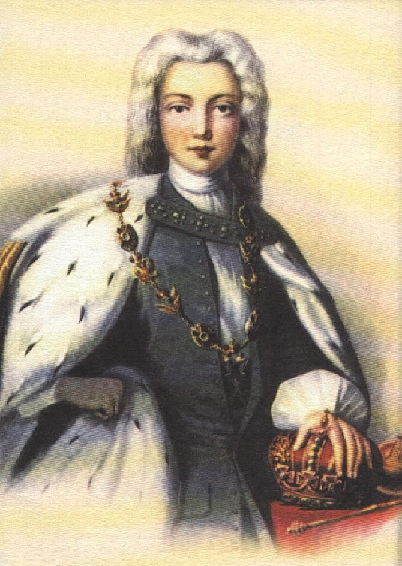

Пётр II Алексеевич — российский император, внук Петра I Великого и последний представитель династии Романовых по мужской линии. Он вступил на престол в 1727 году в возрасте одиннадцати лет после смерти Екатерины I.
Из-за юного возраста Пётр II не мог самостоятельно управлять государством, поэтому большое влияние на политику страны оказывали приближённые дворяне и члены Верховного тайного совета. Сначала власть находилась в руках князя Александра Меншикова, однако позже его влияние было ослаблено.
Во время правления Петра II столица Российской империи временно была перенесена из Санкт-Петербурга обратно в Москву. Двор всё больше ориентировался на старые московские традиции, а многие реформы Петра I стали проводиться менее активно.
Большую часть времени молодой император уделял развлечениям, охоте и придворной жизни. Государственные дела часто отходили на второй план, что приводило к усилению влияния знатных семей при дворе.
Несмотря на короткое правление, эпоха Петра II стала важным периодом борьбы за власть между различными дворянскими группировками. Именно в это время усилилось влияние аристократии на управление государством.
В 1730 году Пётр II тяжело заболел оспой и вскоре умер, не достигнув совершеннолетия. Его смерть завершила мужскую линию потомков Петра I и стала важным событием в истории Российской империи.
